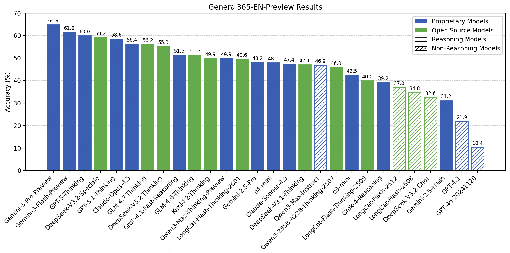
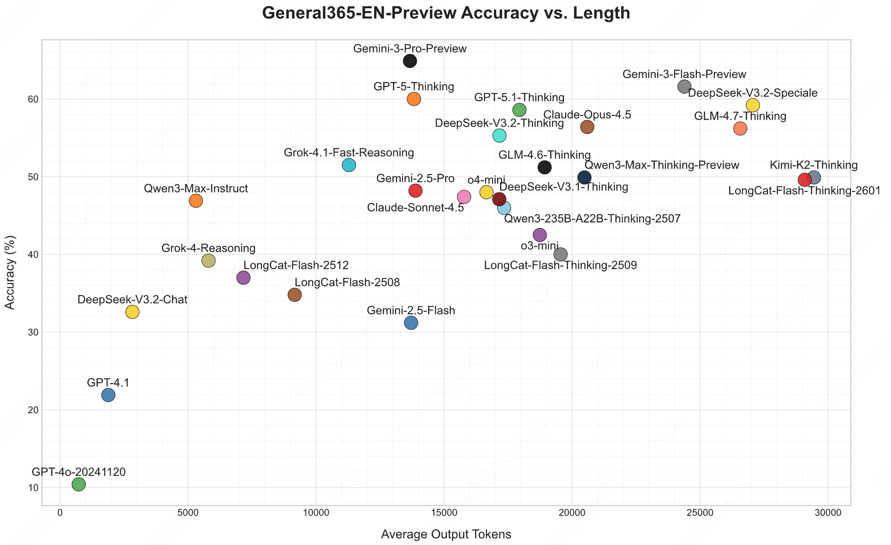
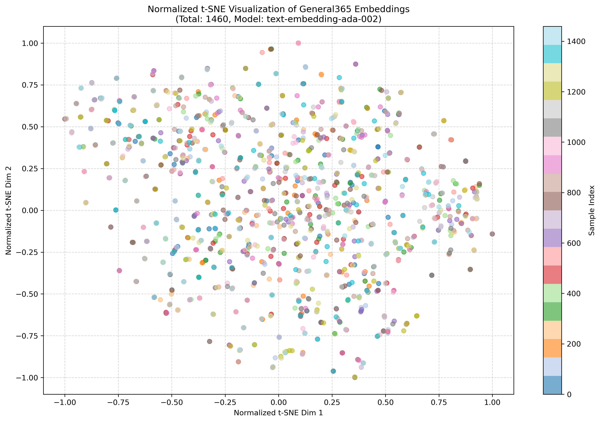

🧩 General365
🏆Leaderboard🏆

Token Efficiency

Diversity Analysis

Challenging Categories
We have conceptually categorized the reasoning challenges that the General365 seed data is designed to address. Through a review of existing reasoning benchmarks, as well as an analysis of real-world applications of reasoning skills, we identified eight distinct challenge categories:
(1) Multiple Constraint Reasoning: Problems with interconnected conditions requiring multi-step logical reasoning. (2) Branching Complex Reasoning: Problems require analyzing multiple variables and conditions to cover all possible scenarios for accurate conclusions. (3) Spatial and Temporal Reasoning: Problems involving spatial or time-related conditions, such as geometric shapes or temporal causality. (4) Recursive Reasoning: Problems require iterative assumptions, trials, validations, and backtracking. (5) Semantic Interference Reasoning: Problems involving rules that conflict with intuition, misleading information, or custom rules. (6) Implicit Information Reasoning: Problems involve making connections between seemingly unrelated items using hidden clues. (7) Optimal Strategy Reasoning: Problems involve developing and evaluating strategies to choose the optimal one. (8) Probabilistic Reasoning: Problems involve calculating probabilities or the likelihood of events.
Grading Pipeline
A.Grading Method: General365 employs different grading approaches based on the specific answer type for each problem. For problems requiring numerical answers (238 out of 365), we employ the parser-based grading. For problems requiring other text descriptive answers (127 out of 50), we use LLM-based grading with GPT-4.1 serving as the grading model.
B.Grading Accuracy: We conducted a manual quality review of the grading accuracy, achieving 99.59%, covering 1,460 results across four models (Gemini-2.5-Pro, Deepseek-V3.1-Thinking, Longcat-Flash-Thinking, o4-mini).
Abstract
We present AMO-Bench, an Advanced Mathematical reasoning benchmark with Olympiad level or even higher difficulty, comprising 50 human-crafted problems. Existing benchmarks have widely leveraged high school math competitions for evaluating mathematical reasoning capabilities of large language models (LLMs). However, many existing math competitions are becoming less effective for assessing top-tier LLMs due to performance saturation (e.g., AIME24/25). To address this, AMO-Bench introduces more rigorous challenges by ensuring all 50 problems are (1) cross-validated by experts to meet at least the International Mathematical Olympiad (IMO) difficulty standards, and (2) entirely original problems to prevent potential performance leakages from data memorization. Moreover, each problem in AMO-Bench requires only a final answer rather than a proof, enabling automatic and robust grading for evaluation. Experimental results across 26 LLMs on AMO-Bench show that even the best-performing model achieves only 52.4% accuracy on AMO-Bench, with most LLMs scoring below 40%. Beyond these poor performances, our further analysis reveals a promising scaling trend with increasing test-time compute on AMO-Bench. These results highlight the significant room for improving the mathematical reasoning in current LLMs. We release AMO-Bench to facilitate further research into advancing the reasoning abilities of language models.

Dataset Statistics
A.Problem categories: Referring several official competition syllabus, we categorize the 50 problems of AMO-Bench into the following five primary categories:
Algebraic Equations & Inequalities (11/50), Functions & Sequences (13/50), Geometry (5/50), Number Theory (9/50), and Combinatorics (12/50).
Figure a show the overall distribution of problem categories in AMO-Bench.
B.Length distribution of human-annotated solutions:
Since the problems in our AMO-Bench are equipped with manually annotated solutions, we can preliminarily analyze the reasoning complexity of these problems from the view of solution length.
We measure solution length in terms of token count. Additionally, we compare the distribution of solution lengths with those from AIME24 and MATH500.
Figure b illustrates the solution length distributions across these benchmarks.
It reveals that solutions in AMO-Bench exhibit significantly higher lengths, indicating that problems in this benchmark are inherently more challenging and require more complex reasoning to arrive at the final answer.

Construction and Grading Pipeline
A.Construction pipeline: AMO-Bench have built up a comprehensive multi-stage construction pipeline that covers the entire process from question creation to final inclusion. This pipeline comprises four major stages: (1) Data creation, all problems are independently designed by mathematics experts from top universities and educational institutions. Beyond the final answer, each problem author must provide a detailed step-by-step solution. (2) Quality review, each candidate problem undergoes blind review by at least three experts to assess its quality. (3) Originality review, the originality review stage aims to ensure that these newly created problems are not mere rewrites of publicly available materials, but demonstrate genuine originality. (4) Difficulty review, we implement a difficulty review stage to filter out problems lacking adequate complexity, to ensure that AMO-Bench presents a sufficient challenge to state-of-the-art LLMs.
B.Grading Pipeline: AMO-Bench employs different grading approaches based on the specific answer type for each problem. For problems requiring numerical, set, or variable-expression answers (39 out of 50), we employ the parser-based grading. For problems requiring descriptive answers (11 out of 50), we use LLM-based grading with o4-mini (Low) serving as the grading model.

BibTeX
@misc{an2025amobench,
title={AMO-Bench: Large Language Models Still Struggle in High School Math Competitions},
author={Shengnan An and Xunliang Cai and Xuezhi Cao and Xiaoyu Li and Yehao Lin and Junlin Liu and Xinxuan Lv and Dan Ma and Xuanlin Wang and Ziwen Wang and Shuang Zhou},
year={2025},
eprint={2510.26768},
archivePrefix={arXiv},
primaryClass={cs.CL},
url={https://arxiv.org/abs/2510.26768}
}